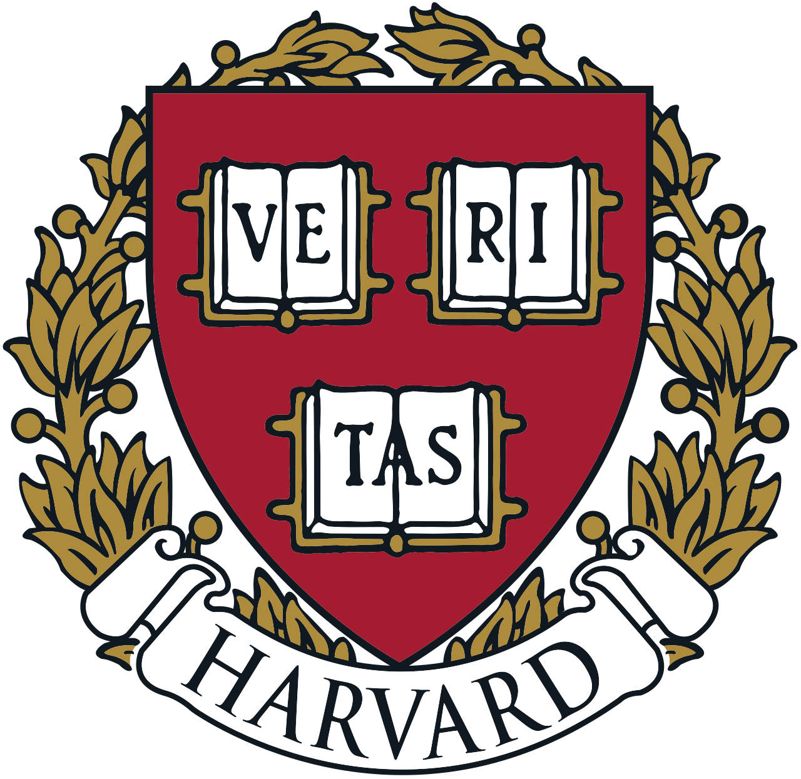
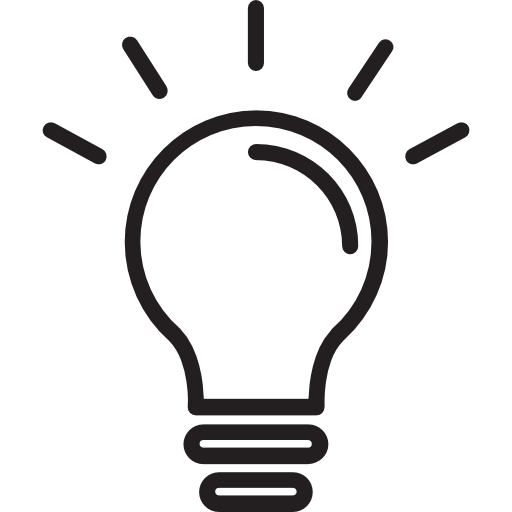
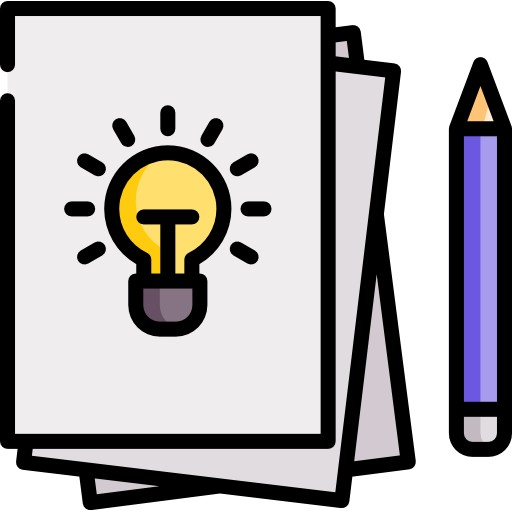

From a child's earliest educational decisions to college/university,
postgraduate study and the first years of a career, ProgressEdge
helps individuals and families understand what is possible, and
build a roadmap to get there.

Guidance for every stage. A longer view.
Build confidence, curiosity and core skills. Explore interests and future possibilities.
Learn moreAcademic strategy, subject selection, extracurricular development, and university applications.
Learn moreCareer discovery, graduate study, research, CV support and professional positioning.
Learn moreCareer transitions, international mobility, further study, and long-term career planning.
Learn moreMost educational advice focuses on the next application. We take a longer view, combining evidence, experience and personal insight to design a plan that fits you.

Who are you?
Interests, strengths,
aptitude, values, and
ambitions.

Where could you go?
Explore pathways and
identify the best opportunities
for you.
What will it take?
Create a structured plan:
academics, skills, experiences,
networks and decisions.
Are you on track?
Set milestones, measure
progress and adapt
over time.